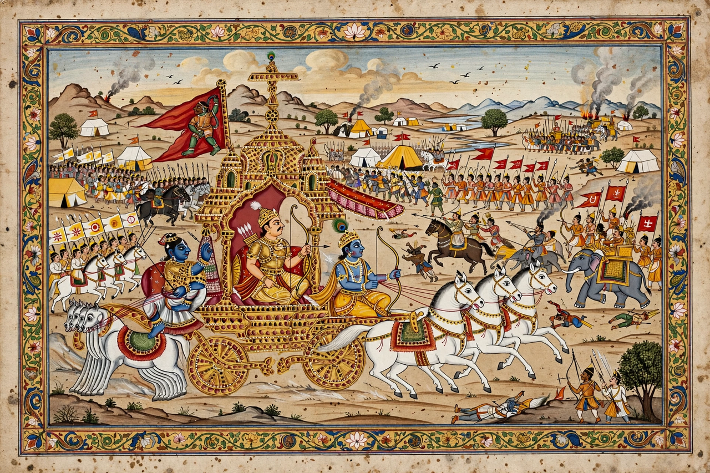

Mahabharata
From Wikipedia, the free encyclopedia

The Mahabharata is one of the two major Sanskrit epics of ancient India (the other being the Ramayana), traditionally attributed to the sage Vyasa. Composed and expanded over centuries (roughly 400 BC – AD 400), it narrates the struggle between two branches of the Kuru dynasty — the Pandavas and Kauravas — culminating in the Kurukshetra War, and contains the Bhagavad Gita, Hinduism's most famous philosophical text. At some 100,000 verses it is the longest epic poem ever written.
Structure and story
The epic's eighteen books (parvas) tell of the blind king Dhritarashtra's sons (the Kauravas) and their cousins the five Pandava brothers, the dice game in which Yudhishthira loses kingdom, brothers and wife Draupadi, the thirteen-year exile, and the catastrophic eighteen-day war at Kurukshetra in which nearly all the warriors die. Framing the conflict are hundreds of sub-tales — Nala and Damayanti, Savitri and Satyavan, the Ramayana in miniature — making the epic an encyclopaedia of Dharma, law, myth and statecraft ('what is not here is nowhere').
The Bhagavad Gita
On the eve of battle, the archer Arjuna despairs at killing his kin; his charioteer, the god Krishna, answers with the Bhagavad Gita's teaching on duty, detachment, devotion and the immortal self. The Gita became the central scripture of modern Hindu practice and a world philosophical classic, commented on by figures from Adi Shankara to Mahatma Gandhi.
Text and influence
The Pune Critical Edition (1919–1966) collated over a thousand manuscripts into a 13,000-page text. The epic saturates Indian culture — theatre (Kathakali, Wayang in Indonesia), television (the 1988–90 serial watched by nearly the whole nation), comics and political rhetoric — and remains a living text ritually recited across South and Southeast Asia.